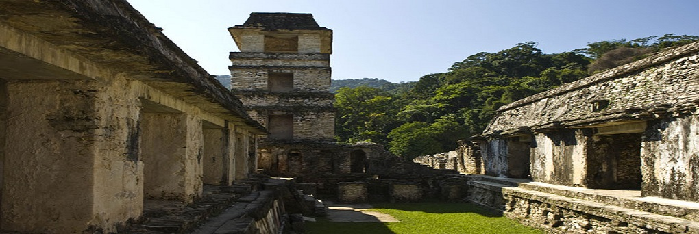
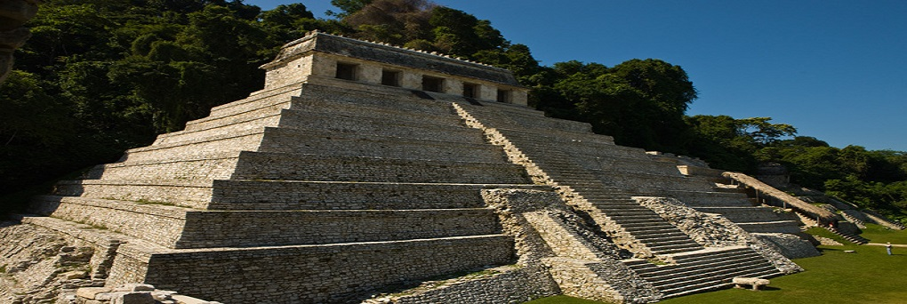
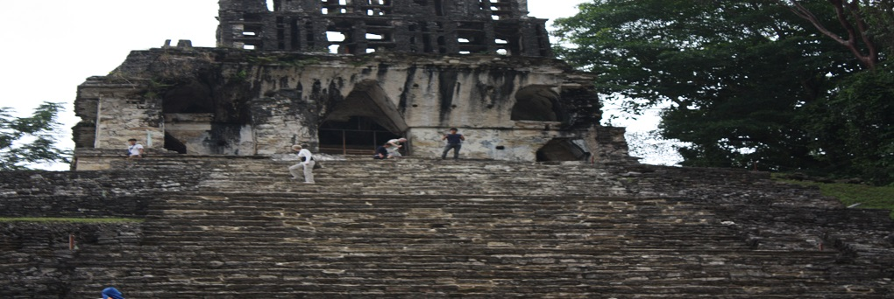
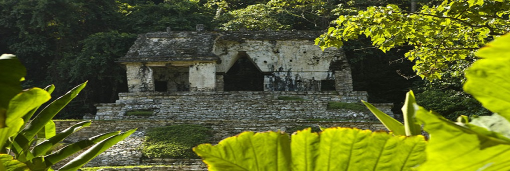
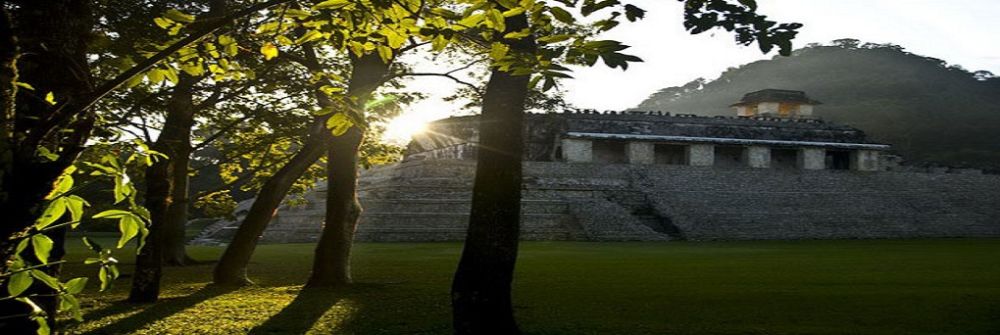
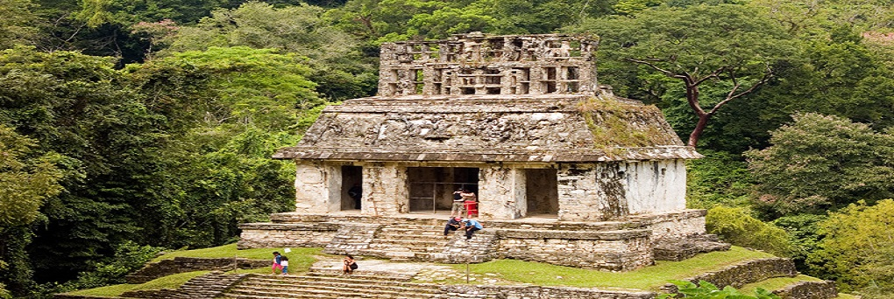

Se cree que los mayas fundaron Lakam Ha durante el período Formativo (2500 a. C. - 300 dC), alrededor del 100 a. C., como una aldea predominantemente agricultora, y favorecida por los numerosos manantiales y corrientes de agua de la región.
Palenque es una ciudad maya, que se encuentra en lo que hoy es el municipio de Palenque, ubicado en el estado mexicano de Chiapas, cerca del río Usumacinta. Es uno de los sitios más impresionantes de esta cultura. En comparación con otras ciudades mayas, se la considera de tamaño mediano: menor que Tikal o Copán, destaca por su acervo arquitectónico y escultórico.
El área descubierta hasta 2005 abarca 2,5 km², pero se estima que sólo se ha explorado menos de un 2% de la superficie total que alcanzó la ciudad, permaneciendo aún más de mil estructuras cubiertas por la selva. En 1981, Palenque fue designado parque nacional.1 La Unesco la declaró Patrimonio de la Humanidad en 1987.2
La población creció durante el período Clásico Temprano (200-600), hasta ser una ciudad, llegando a ser la capital de la región de B'akaal (hueso), comprendido en la zona de Chiapas y Tabasco, en el período Clásico Tardío (600-900). La más antigua de las estructuras que han sido descubiertas fue construida alrededor del año 600.
B'akaal fue un centro importante de la civilización maya entre los siglos V y IX, durante los cuales alternó épocas de gloria y de catástrofe, de alianzas y guerras. En más de una ocasión hizo alianzas con Tikal, la otra gran ciudad maya de la época; en especial para contener la expansión del belicoso Calakmul, también llamado "Reino de la Serpiente". Calakmul resultó victorioso en dos ocasiones, en 599 y 611.
Los gobernantes de B'akaal proclamaban que el origen de su linaje venía del pasado remoto, algunos inclusive jactándose de provenir de tiempos prehistóricos, llegando a la creación del mundo actual, que, en la mitología maya, fue en el año 3114 a. C. Las teorías arqueológicas modernas especulan que la primera dinastía de sus regidores fue probablemente olmeca.
El estado de B'aakal estuvo constantemente presionado durante el siglo VIII, del mismo modo que ocurrió con otras ciudades mayas del período clásico. Wak Kimi Janaab' Pakal, también llamado Pacal IV, comenzó a gobernar en 799, y después de él, se pierden los rastros de la dinastía de Palenque. Poco después del año 800 ya no hubo nuevas construcciones en el centro ceremonial. Aunque se sabe que a principios del siglo IX B'aakal ocupaba una posición que aún era respetable e influyente en el área, la emigración y el abandono ya habían comenzado. Lakam Ha' continuó habitada por unas cuantas generaciones más dedicadas a la agricultura, y el lugar fue abandonado paulatinamente, al tiempo que la selva avanzaba sobre él. Para el siglo XVI la región apenas estaba habitada.